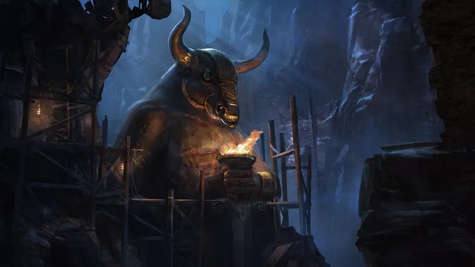
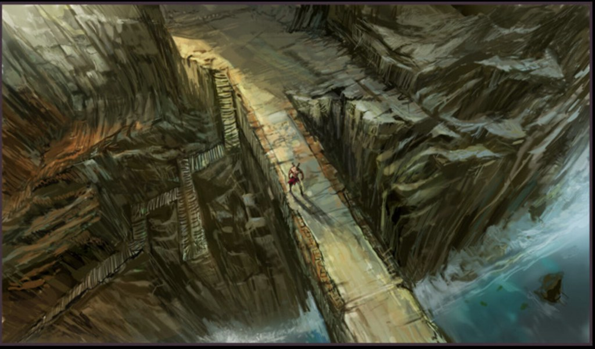

PÁGINA 18 — A ARTE CONCEITUAL DA TRILOGIA GREGA
Por trás de cada cenário grandioso e de cada inimigo icônico da trilogia grega de God of War existe um extenso processo de criação artística que raramente chega ao público. O Santa Monica Studio, ao comemorar seus 20 anos de existência, abriu seus arquivos e revelou peças de arte conceitual inéditas, acompanhadas de relatos dos próprios artistas. Um dos momentos mais emblemáticos dessa revelação foi o famoso "esboço de guardanapo" do criador de Kratos: a primeira representação do personagem foi rabiscada em guardanapos de restaurante durante um almoço de design, quando o artista percebeu que havia esquecido seu caderno de rascunhos.

Cada elemento visual da trilogia passou por dezenas de iterações antes de chegar à sua forma final. O design de personagens como Ícaro, por exemplo, foi concebido como uma figura de loucura evidente — com expressões exageradas e pose que revelasse instantaneamente seu estado mental deteriorado. O artista conceitual responsável chegou a incluir em um rascunho um gato morto nos braços do personagem como símbolo de sua insanidade, ideia que acabou não sendo implementada no jogo final.
A arte conceitual também serviu como ferramenta de planejamento de gameplay. Quadrinhos internos produzidos durante a pré-produção de God of War (2018) — chamados de "The Hunt" — foram usados para visualizar simultaneamente componentes de jogabilidade e narrativa, permitindo que a equipe validasse cenas inteiras antes de uma única linha de código ser escrita.

Saiba Mais!
📚 Fontes:
https://blog.br.playstation.com/santa-monica-20-anos
https://observatoriodegames.com.br/santa-monica-20-anos